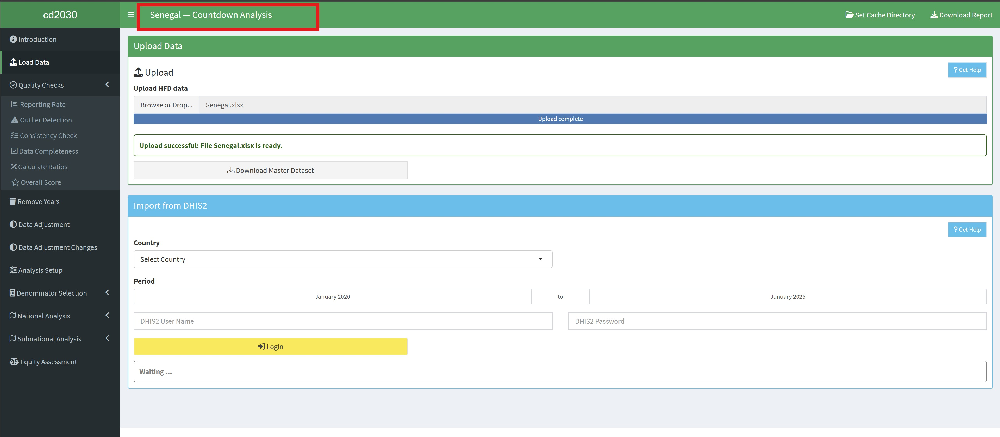
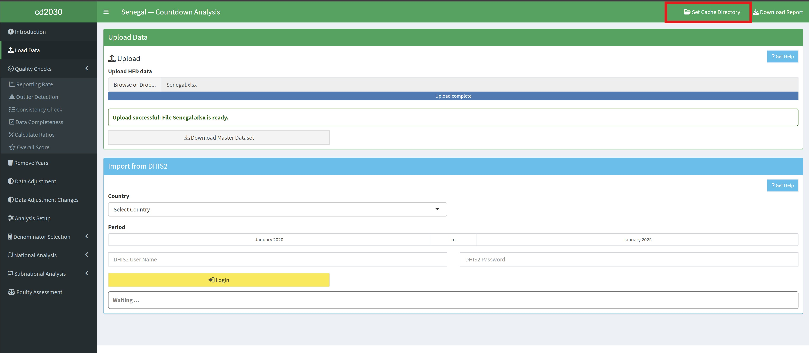
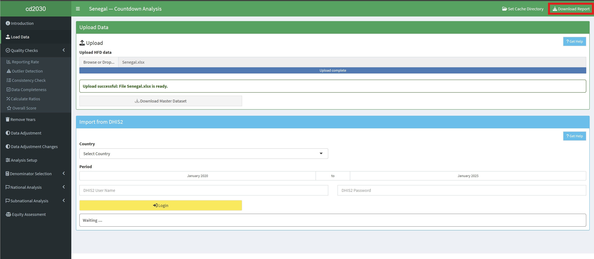
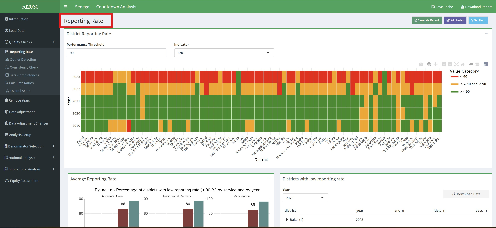

3 App Features
This section details the main components of the cd2030 Shiny App interface: the Title Bar, Sidebar, and Main Panel (Body Content). Understanding these elements will help you navigate and use the app effectively.
3.1 Title Bar
The Title Bar, located at the top of the app, provides key information controls. The elements of the Title Bar, such as “Set Cache Directory/Save Cache” and “Download Report,” are only displayed after data has been loaded.
3.1.1 Key Elements of the Title Bar
- Contextual Information: Displays the current analyssis context, such as the country of analysis (e.g., “Senegal - Countdown Analysis”).
- Cache Management
- Set Cache Directory: This button allows you to specify a directory for saving intermediate results and progress.
- Save Cache: This button allows you to save the progress of your analysis. This is useful for large analyses or for resuming a session later.

- Download Report: This button allows you to generate the final report. The available download formats are Word and PDF.

3.3 Main Panel(Body Content)
The main panel is the central workspace where the analysis result, visualizations, and interactive elements are displayed.
3.3.1 Key Elements of the Main Panel
- Page Title: Displays the current module or analysis step (e.g., “Reporting Rate”).

- Action Buttons: Provides context-specific actions:
- Generate Report: Downloads a report specific to the current page or analysis.
- Add Notes: Allows you to add annotations and comments directly to the results or visualizations.
- Get Help: Provides context-sensitive help and documentation for the current page.